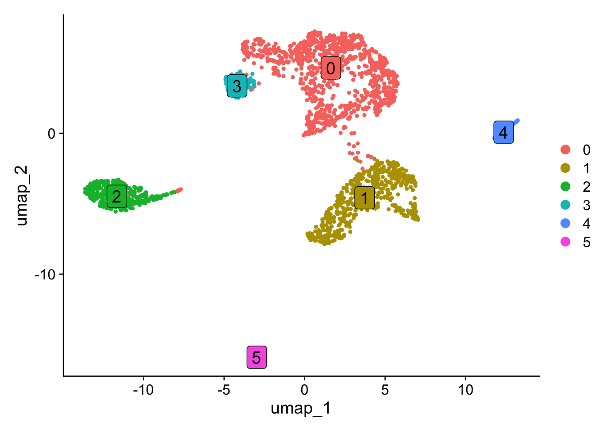

require(Yano)Loading required package: Yano── Attaching packages ────────────────────────────────────────────── Yano 1.0 ──
✔ dplyr 1.1.4 ✔ Seurat 5.1.0
✔ ggplot2 3.5.1 exp <- ReadPISA("./exp/")
obj <- CreateSeuratObject(exp, min.features = 1000, min.cells = 10)
obj[["percent.mt"]] <- PercentageFeatureSet(obj, pattern = "^MT-")
obj <- subset(obj, nFeature_RNA < 9000 & percent.mt < 20)
# Downsampling to 2000 cells for fast testing
obj <- obj[, sample(colnames(obj),2000)]
# Clustering analysis
obj <- NormalizeData(obj) %>% FindVariableFeatures() %>% ScaleData(vars.to.regress = "nCount_RNA") %>% RunPCA(verbose=FALSE) %>% FindNeighbors(dims = 1:10, verbose=FALSE) %>% FindClusters(resolution = 0.5, verbose=FALSE) %>% RunUMAP(dims=1:10, verbose=FALSE)Normalizing layer: counts
Finding variable features for layer counts
Regressing out nCount_RNA
Centering and scaling data matrixDimPlot(obj, label=TRUE, label.size = 5, label.box = TRUE)